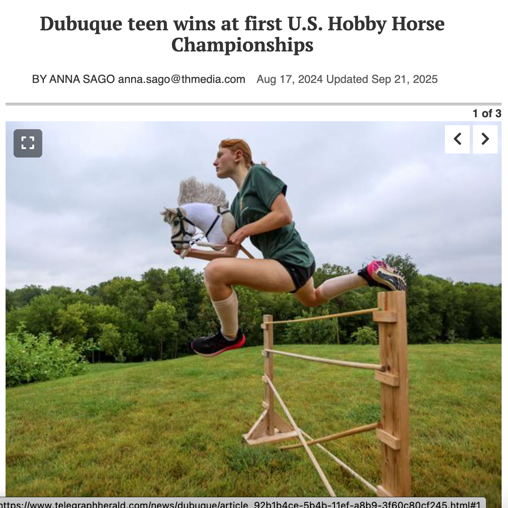
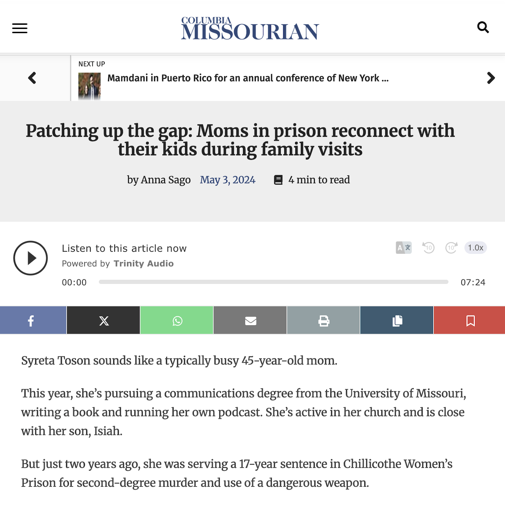
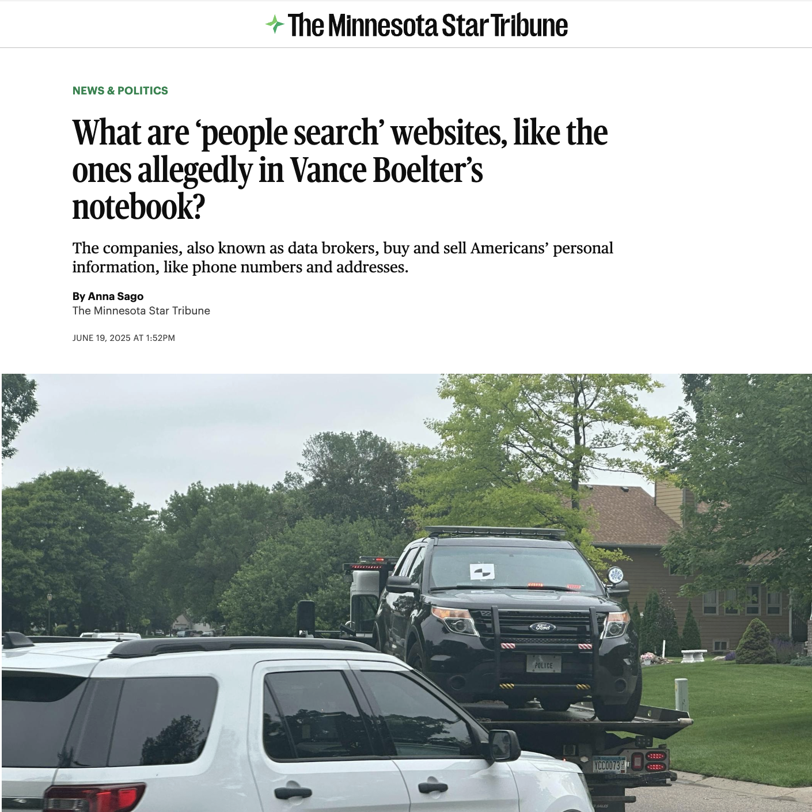
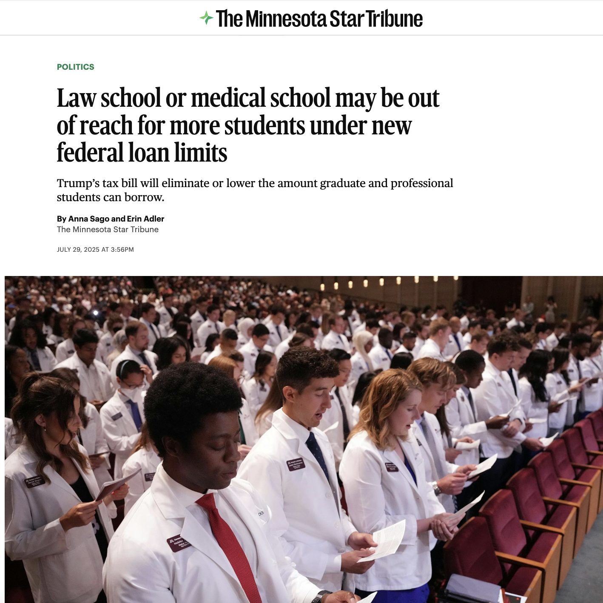
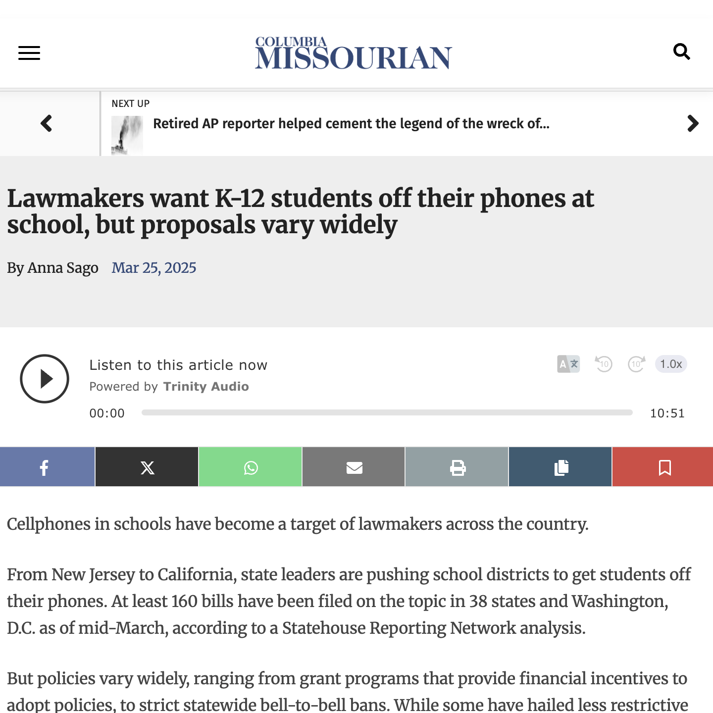

Dubuque teen wins at first U.S. Hobby Horse Championships
My editor assigned this story after a tip from Gwen's dad, Chris Maiers. Everyone in the newsroom was a little apprehensive at first after looking up what "hobby horsing" is, but after going to the Maier's home I found this was one of my favorite stories that I reported and wrote during my summer at the Telegraph-Herald.

Patching up the gap: Moms in prison reconnect with their kids during family visits
I was put in touch with Syreta Toson, a formerly incarcerated woman, by another member of the community who expressed an interest in sharing her story and more information about the PATCH program. I chatted with Syreta, her son, Isiah, and Barb Burton, the director of PATCH, about the relationship the Tosons were able to build through the PATCH program.

What are ‘people search’ websites, like the ones allegedly in Vance Boelter’s notebook?
I wrote this story during my summer as a breaking news intern in the wake of an attempted assasination on several MN lawmakers, whose addresses the suspect may have found using "people search" sites. I am following up on this story with a research paper about how the First Amendment applies to data brokers.
MO spends millions on abortion alternatives. Could the federal government crack down?
After I noticed a perennial earmark for abortion alternatives in Missouri's budget worth millions could run afoul of a proposed federal rule, I wanted to highlight that disparity in time for readers to weigh in on the budget-making process.

Law school or medical school may be out of reach for more students under new federal loan limits
As a recent grad, I had heard a lot of chatter about changes to Grad PLUS loans for medical and other postgraduate students. I levereged my understanding of the issues most important to young people to write this story with Erin Adler, the Strib's higher ed reporter.

Lawmakers want K-12 students off their phones at school, but proposals vary widely
This was one of the stories I wrote as a part of the Statehouse Reporting Network. We used bill tracking tools to identify trends in state legislatures, and collaborate with peer schools to write about them. I noticed a number of bills about phones and schools and wrote this piece.